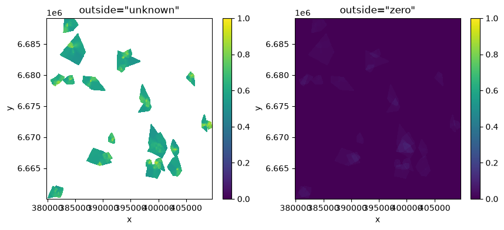

Combining entities: surfaces, stacks and overlap#
These operations put the rasters of several entities on one grid, so each needs to know what a cell outside an entity’s raster means. You must say
outside="zero" (never there: counts as 0) or outside="unknown" (no information: left out, and not counted in averages). See Concepts.
import tempfile
import numpy as np, pandas as pd, matplotlib.pyplot as plt
import entityraster as er
from entityraster import synth
data = synth.make_dataset(tempfile.mkdtemp(), n=150, seed=5)
gdf = data.people
old = gdf[gdf["age"] > 60]
len(old)
56
Group surfaces#
The mean raster per group, on one shared grid so the groups can be compared cell by cell:
cube = old.rst.surface("activity_space", by="gender", outside="unknown") # an xarray DataArray (gender, y, x)
cube
<xarray.DataArray (gender: 3, y: 582, x: 596)> Size: 8MB
array([[[nan, nan, nan, ..., nan, nan, nan],
[nan, nan, nan, ..., nan, nan, nan],
[nan, nan, nan, ..., nan, nan, nan],
...,
[nan, nan, nan, ..., nan, nan, nan],
[nan, nan, nan, ..., nan, nan, nan],
[nan, nan, nan, ..., nan, nan, nan]],
[[nan, nan, nan, ..., nan, nan, nan],
[nan, nan, nan, ..., nan, nan, nan],
[nan, nan, nan, ..., nan, nan, nan],
...,
[nan, nan, nan, ..., nan, nan, nan],
[nan, nan, nan, ..., nan, nan, nan],
[nan, nan, nan, ..., nan, nan, nan]],
[[nan, nan, nan, ..., nan, nan, nan],
[nan, nan, nan, ..., nan, nan, nan],
[nan, nan, nan, ..., nan, nan, nan],
...,
[nan, nan, nan, ..., nan, nan, nan],
[nan, nan, nan, ..., nan, nan, nan],
[nan, nan, nan, ..., nan, nan, nan]]], shape=(3, 582, 596))
Coordinates:
* gender (gender) StringDType(na_object=nan) 48B 'female' 'male' 'other'
* y (y) float64 5kB 6.689e+06 6.689e+06 6.689e+06 ... 6.66e+06 6.66e+06
* x (x) float64 5kB 3.799e+05 3.799e+05 3.8e+05 ... 4.096e+05 4.096e+05
Attributes:
crs: EPSG:3067
outside: nodata
stat: mean
n_entities: {'female': 30, 'male': 25, 'other': 1}
transform: (50.0, 0.0, 379850.0, 0.0, -50.0, 6689150.0)zero = old.rst.surface("activity_space", by="gender", outside="zero")
fig, ax = plt.subplots(1, 2, figsize=(10, 4))
cube.sel(gender="female").plot(ax=ax[0], cmap="viridis", vmin=0, vmax=1)
zero.sel(gender="female").plot(ax=ax[1], cmap="viridis", vmin=0, vmax=1)
ax[0].set_title('outside="unknown"'); ax[1].set_title('outside="zero"');

The same data, two very different maps: with "unknown" each cell shows the average over the people who actually have a value there; with "zero" it is diluted by everyone else.
stat can be "mean" (default), "sum" or "count". Counting how many people have a value above a threshold needs no outside=, because it is identical either way:
n_high = old.rst.surface("activity_space", stat="count", threshold=0.5) # people above 0.5 in each cell
int(n_high.max())
8
The same thing inside groupby#
surfaces = old.groupby("gender", observed=True)["activity_space"].agg(er.mean_surface(outside="unknown"))
surfaces
gender
female <Surface mean 593x582 outside='nodata' n=30>
male <Surface mean 595x531 outside='nodata' n=25>
other <Surface mean 62x46 outside='nodata' n=1>
Name: activity_space, dtype: object
Each entry is a Surface, a small wrapper with .plot(), .to_geotiff(path) and .data (the xarray array). Groups here may have different grids; to compare them cell by cell give them a shared
grid, or use old.rst.surface(..., by=...) above, which already does. entityraster.surfaces_to_xarray() joins them when their grids agree.
surfaces["female"].data.shape
(582, 593)
er.sum_surface and er.count_surface work the same way.
A stack of all rasters#
stack gives an xarray cube (entity, y, x), one layer per person (memory grows with the number of entities times the grid: for big collections prefer the surfaces above, which stream):
small = old.iloc[:5]["activity_space"].rst.stack(outside="unknown")
small.dims, small.shape
(('entity', 'y', 'x'), (5, 394, 467))
Pick the grid with grid="union" (default), "intersection", or an entityraster.Grid of your own.
Overlap between entities#
How much do two people’s activity spaces overlap? overlap compares all pairs (or only pairs within a group) and returns a long table:
ov = old["activity_space"].rst.overlap("udoi", outside="zero", by=old["neighbourhood"])
ov.sort_values("value", ascending=False).head(5).round(3)
| i | j | value | |
|---|---|---|---|
| 33 | 57 | 95 | 0.655 |
| 43 | 95 | 134 | 0.564 |
| 32 | 57 | 90 | 0.552 |
| 6 | 49 | 74 | 0.532 |
| 35 | 57 | 132 | 0.505 |
"udoi" is the utilization distribution overlap index (identical uniform ranges give 1, and concentrated overlapping distributions can exceed 1); "jaccard" compares the sets of cells above a threshold.
Pairs whose bounding boxes do not intersect are skipped (they are exactly 0 under "zero", undefined under "unknown"); prune=False computes every pair.
Saving a surface#
import pathlib
out = pathlib.Path(tempfile.mkdtemp())
surfaces["female"].to_geotiff(out / "women_60plus.tif") # opens in QGIS and ArcGIS
er.to_geotiff(cube, out / "all_groups.tif") # one band per group, named after the group
sorted(p.name for p in out.iterdir())
['all_groups.tif', 'women_60plus.tif']
Choosing between "zero" and "unknown"#
the empty cell means |
choose |
|---|---|
nothing happened / the entity was never there (time, visits, counts) |
|
not measured or not modelled there (a model covering a home range, cloud gaps, a survey that did not ask) |
|
it depends and you want to see how much |
run both, as above |